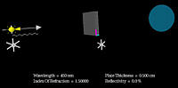
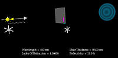
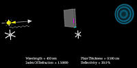
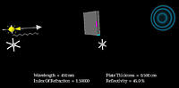
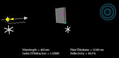
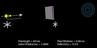

Created
by Srihari Angaluri and Kiril Vidimce
Send comments to comments@webtop.org
In the following images, light from a monochromatic point source, of wavelength 450 nm, is incident upon a slab of material whose index of refraction is 1.50, and thickness is 0.500 cm. Only a finite cone of rays from the source is allowed to strike the slab. Both sides of the slab are coated and have the same reflectivity 'R'.
|
 R = 0 |
 R = 15.0% |
|
 R = 30% |
 R = 45.0% |
|
 R = 60% |
 R = 75.0% |
Created
by Srihari Angaluri and Kiril Vidimce
Send comments to comments@webtop.org